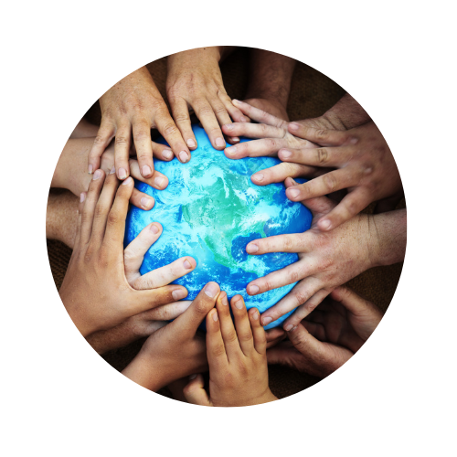

.png)
Organizaciones
Hablemos de la Comunidad y Cómo Alzanzar el Objetivo
Hablemos de la Comunidad y Cómo Alzanzar el Objetivo
Ambitos de Producción y el Consumo Responsable
¿Cómo podemos alcanzar el objetivo? Existen muchas maneras de alcanzar el objetivo de Producción y Desarrollo Sustentable, pero estas orbitan a la acción y la concientización, de esta forma, se puede proceder a la reflexión y entender las consecuencias que conllevan nuestras acciones de forma ecológica, social y económica. (Del Consumidor, P. F., n.d.) |
El Rol del Consumidor
La responsabilidades dentro de la Producción y Desarrollo Sustentable desde la perspectiva del consumidor residen en consumir lo necesario tomando en cuenta las implicaciones ecológicas, económicas y las condiciones humanas, hacer uso responsable de los recursos naturales e igualmente importante, exigir estas condiciones para el productor. El Rol del Productor La responsabilidad dentro de la Producción y Desarrollo Sustentable desde la perspectiva del productor reside en la ética de trabajo respecto a responsabilidad social, económica y ecológica en la producción de sus bienes y servicios. Buscando las mejores alternativas, escuchando a los consumidores y reflexionando sobre su impacto. (Del Consumidor, P. F., n.d.) |
Recomendaciones
 Otras Consideraciones Mientras que algunas consideraciones más específicas son: Actuar conforme a las Rs ecológicas, y la huella de carbono para cambiar la mentalidad consumista. Evitar consumir productos con empaquetados innecesarios y contaminantes, apoyar productos biodegradables y de bajo consumo. Aprovechar la luz natural, caminar o utilizar bicicletas cuando sea posible. (Consumo Responde, 2020) & (BBVA, 2020) |
||
| |
||||
|
Desecha correctamente tus residuos Como parte de la responsabilidad ambiental que tenemos como consumidores, una alternativa para contrarrestar nuestro impacto es a través de procesar nuestros residuos correctamente. Existe una organización en la región denominada "Centro de Procesamiento de Residuos Orgánicos" en la zona de Fluvial Vallarta, puedes contactar a Alejandro Parra vía Facebook para conocer más acerca de su increíble proyecto. Dile no al Fast Fashion El apoyar a pequeños negocios de Bahía de Banderas que le dan una segunda oportunidad a la ropa es una forma de apoyar a la Producción y el Consumo Sustentable. Un claro ejemplo es Ciaogarrobo, un bazar de Instagram de nuestro profesor Julio Arriaga. Sin embargo, existen otros negocios sustentables en la región como Bazar de Bunny Baby, Sunny Bazar y Bahía Bazar. Te invitamos a checar las ediciones de Bazar Day en donde todos los pequeños negocios se reúnen. |
||||
|
||||